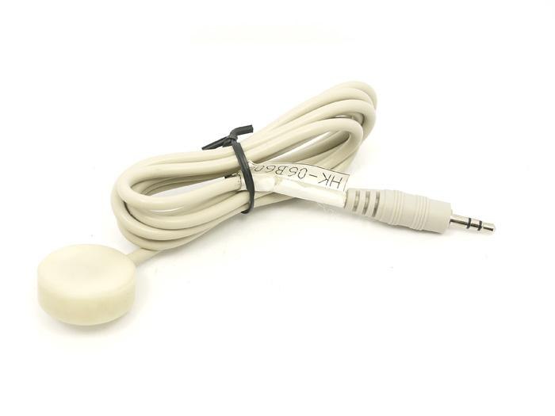
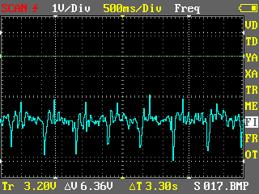

This page is in processing now.
This Heart Sound sensor integrated micro-sound components which is made from new polymer materials, can output low-impedance audio signal. Using modular design, PCB plug-way closed. It can be widely used in various types of acquisition equipment, such as heart sound signal acquisition, fetal-audio signal acquisition, as well as other surface-tone signal acquisition.
Model: SEN42771M

The warnings and wrong operations possible cause dangerous.
It is the schematic, the circuit about Eagle resource like .pdf should linked here in order to avoid memory exhausted.
The output waveform tested is shown below.

It varies from person to person.
All the components used to produce the product.
Please list your question here: How to use this component?How to get data use iPhone's SDK? Can you have some sample code that demo this component with Object C on MAC OS?
If you have questions or other better design ideas, you can go to our forum or wish to discuss.
Bug Tracker is the place you can publish any bugs you think you might have found during use. Please write down what you have to say, your answers will help us improve our products.
The Additional Idea is the place to write your project ideas about this product, or other usages you've found. Or you can write them on Projects page.
Click here to buy Heart Sound Sensor on SEEED bazzar: http://www.seeedstudio.com/depot/heart-sound-sensor-p-833.html?cPath=144_148&zenid=cee0a25bbc9ba561a121caf3e07d17a3
Other related products and resources.
This documentation is licensed under the Creative Commons Attribution-ShareAlike License 3.0 Source code and libraries are licensed under GPL/LGPL, see source code files for details.
Links to external webpages which provide more application ideas, documents/datasheet or software libraries
Copyright (c) 2008-2016 Seeed Development Limited (www.seeedstudio.com / www.seeed.cc)